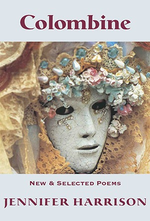

Colombine, New & Selected Poems
Jennifer Harrison

Description
In her busking cloche velvet dress and army boots her Salem air of ashes she clears a space in Harvard Square to play the musical glasses. Reading all of these poems, from first to last, is to marvel at their gorgeous awareness, and language, to feel a subtle but palpable transmission between figures of being, as if Michelangelo’s unfinished figures merge with the teenagers in their yearning, merge with the anxieties and anguishes of cancer, and of love. They are present in the inner joy and grief of Colombine when she shockingly performs a self-imposed penance on her own body and breast, echoing an early poem, in Jenny’s earliest book, about the body and the breast, the unfinished and unknowable power of material of the sculpture... and the breast of the poem. There is an uncanny single being emerging from the material. It is her poetry’s own kind of love and nurturing, not to impose, but to be. It is brilliantly done throughout. Philip Salom A major contribution to Australian poetry which demonstrates Harrison’s evolving career and mastery. Its depth of intellectual and emotional registers, in addition to its sustained craft, makes this poetry demanding yet also immensely rewarding and enjoyable. Judges comments, Western Australian Premier’s Book Awards
Description
In her busking cloche velvet dress and army boots her Salem air of ashes she clears a space in Harvard Square to play the musical glasses. Reading all of these poems, from first to last, is to marvel at their gorgeous awareness, and language, to feel a subtle but palpable transmission between figures of being, as if Michelangelo’s unfinished figures merge with the teenagers in their yearning, merge with the anxieties and anguishes of cancer, and of love. They are present in the inner joy and grief of Colombine when she shockingly performs a self-imposed penance on her own body and breast, echoing an early poem, in Jenny’s earliest book, about the body and the breast, the unfinished and unknowable power of material of the sculpture... and the breast of the poem. There is an uncanny single being emerging from the material. It is her poetry’s own kind of love and nurturing, not to impose, but to be. It is brilliantly done throughout. Philip Salom A major contribution to Australian poetry which demonstrates Harrison’s evolving career and mastery. Its depth of intellectual and emotional registers, in addition to its sustained craft, makes this poetry demanding yet also immensely rewarding and enjoyable. Judges comments, Western Australian Premier’s Book Awards
{kind=link}
Information
| ISBN | 9781876044657 |
| Release | 2010 |
| Pages | 250 |
About the Author
Reviews
Geoff Page The Canberra Times review Colombine
Reviews Repeatedly Satisfying Geoff Page The Canberra Times , 29 January 2011 Melbourne poet (and child psychiatrist) Jennifer Harrison published her first collection, Michelangelo’s Prisoners , 15 years ago. Since then there have been three more collections and a co-edited anthology, Motherlode: Australian Women’s Poetry 1986-2008 . Now we have her selected poems and an opportunity to look back over her work as a whole. As with most ‘selecteds’ these days, Colombine starts with a significant batch of recent poems and then proceeds to sample the poet’s earlier work chronologically. In this case the new poems are mainly in two long sequences, ‘Fugue’ and ‘Colombine’. One risk of this arrangement is that some readers may be disconcerted by the more recent work and prefer the earlier poetry with which they have been more familiar. A Sydney reviewer of Colombine has, in fact, already done this and it is possible to see why without necessarily agreeing with him. In her first three books, Harrison ranged widely in her concerns and quite a bit in her techniques. There were poems (a whole book, in fact) which paid tribute to a favourite childhood holiday destination; there were others which portrayed, very movingly, the poet’s experience of breast cancer. Another sequence, ‘Cabramatta’, evoked the poet’s ‘westie’ childhood and adolescence in and around that particular suburb of Sydney (a rather different place from inner-city Melbourne, where she now lives and works). Although the imagery Harrison used in those poems was energetic and original, it was generally in the service of the poem as a whole and its subject matter. In Folly & Grief (2006), Harrison changed her style somewhat. That book made an extensive study of street performers of all kinds: buskers, ‘living statue’ artists, jugglers, funambulists, magicians, fire swallowers, circus clowns, various commedia dell’arte figures and so on. Harrison’s technique seemed to be become more consciously sophisticated and image-driven, as if to accommodate this new, and relatively arcane, subject matter. In several cases, for example in her classic poem, ‘Glass Harmonica’, Harrison achieved a genuine, even unearthly strangeness and a very convincing sense of metaphysics. Writing about a woman playing a glass harmonica in a cold Boston autumn, Harrison finished her poem with ‘...but today she has no bowls for death. // She plays a wintry madrigal. In the city of white swans / she reaches for the smallest bowl, / and then the smaller one.’ Now, in the new part of her ‘selected’, Harrison has gone a step further. In the opening sequence, called ‘Fugue’, the poet employs a variety of forms which rely on repetition, most notably the pantoum and variations of it. The cumulative impact of repeated lines (or nearly repeated lines) can be considerable but much depends on the quality of the line itself. Not every line a poet writes will, or should have to, bear such an emphasis. ‘We visit Rick Amor’s show at the Longwarrrin Gallery’ is probably not such a line whereas ‘Ozymandias brooding over beaches and abandoned cars’ (in the same poem, ‘Before the Funeral’) probably is. This section also has a number of stand-alone poems, such as the gently affectionate ‘Admiral John’, which offer more familiar pleasures. Although she has been told that ‘Admiral John’, an admired figure from her childhood, has ‘died accidentally / shooting blackbirds down the back of Thornleigh Gully’ the poet knows better and asks: ‘Do the green years in your eyes / drift, still, like anger-fish? / Reflected in your polished shoes, / do dragonflies glitter over deep river pools? / Did the gunshot consume forever / the hot bad scream of the sea?’ In ‘Colombine’, the book’s 26-page title sequence, Harrison takes one of the figures who first appeared in Folly & Grief and writes what amounts to a long, eponymous dramatic monologue (in 12-line poems of three quatrains each) which contrives somehow to be both mythical and, at least partly, autobiographical. Again repetition is used but this time more as connective tissue than as a rhetorical device. Earlier, in Folly & Grief , Harrison had a clown declare: ‘I have metaphor, and behind metaphor more costume’. In ‘Colombine’ we have plenty of both—and, admittedly, the risk of the decorative. On the other hand, the sequence does contain a considerable number of highly memorable poems, one of the most striking of which is number XVIII, ‘...the rim copper-bound’. It begins with ‘I’ve not forgotten how the child slid from my body’ and ends with ‘...I swim like an imperfect fish in her greater shadow’. In between we are given a vivid and often metaphoric account of the character’s (and presumably the author’s) experience of breastfeeding in lines such as ‘I’ve not forgotten the shit and vomit, the difficult milk...’ or the more imagistic ‘her body, pale as a morning moon against mine / and, in her breath, the imagined scattered noises of the sea’. For some, the ‘Colombine’ sequence may be an ‘imperfect fish’ but there’s a large amount of deeply satisfying poetry to be had there. The same can be said for Harrison’s selected poems as a whole. It’s no surprise that she has already become an influential figure for a highly talented younger generation of Australian women poets, many of them also from Melbourne.
Martin Duwell Australian Book Review Colombine
Poet of Pairs Martin Duwell Australian Book Review , February 2011, No. 328 Colombine selects from Jennifer Harrison’s four previous collections and adds a book-length group of new poems. In keeping with current practice, the new poems precede the selections, so that anyone wanting to consider Harrison’s twenty-year poetic career in terms of development has to begin some seventy pages in with the poems from her first book, Michelangelo’s Prisoners (1995). You met a lot of her distinctive interests in that book, and it still stands up well. She looks at what we would call embodiment from a distinctly scientific perspective, invoking the position of Humberto Maturana to write poems in which the sea, a major and polyvalent symbol in her work, can stand for the medium in which our embodiment occurs: ‘If each observation is a system / each thought an adaptation, then we drift / upon a spacious sea.’ Cabramatta/Cudmirrah (1996), her second book, is a kind of double journey into memory, focusing on grandparents. The opening section is a tribute to the western suburbs of Sydney, written slightly in the tough talk of that area; the second section is about her childhood holidays on the south coast of New South Wales. However, the issue of memory is not quite as simple as it usually is in poems where childhood sites are revisited. Her grandmother, we learn (less equivocally in the book than in the selection made in Colombine ) is an Alzheimer’s disease victim, and the later poems are partly imagined to be conversations between grandmother and granddaughter, trying to prevent the past disappearing. Memory, the grandmother is imagined to say, ‘digs less for an accurate world / than for the fetch of the wave / and the tide which calls my name / most faintly inwards’. Though Harrison’s next book, Dear B (1999), has rather the quality of a time-marking third book (and is selected from sparingly in Colombine ), her fourth book, Folly & Grief (2006), contains her best work so far and deserves to be celebrated as one of the books of the decade. The overriding symbol is of performance, and the poems show an intense interest in commedia dell’arte figures such as Colombine and Harlequin, in buskers, ventriloquists, and sideshows. Often the result of building a collection around a constellation of images like this is a certain attenuated quality, but Folly & Grief is marked by an extraordinary richness of invention and poetic performance. The new poems are divided (like all of Harrison’s books, except for Dear B ) into two sections. The first contains many poems of travel, which again are far more ambitious and accomplished than the fairly tame poetic genre in which they have their origins: ‘In landscapes I think myself improvisatory,’ she says, gnomically, in ‘Uluru’. And the second section is a kind of biography of Colombine or, at least, the biography of someone who might be one of her incarnations: ‘An actress, I study the faces of birds and believe in science.’ Good as these new poems are - ‘Swann’s Way’ is a brilliant poem about love and life in the past contrasted to the present - it is hard not to think of them as being a kind of afterglow of Folly & Grief . Colombine shows that its author is a copious, varied, sophisticated, and complex poet. When you first read Harrison’s early work, you are likely to be taken by the continuous presence of the sea and, in her later work, by the continuous presence of performance. As will be seen from the brief descriptions of the books which I have given, I think she is better seen as a poet of journeys, memories, and masks. She is also a poet of pairs, sometimes the pairing of face and mirror-image, or of face and mask. If one wanted to provide an example of a moment when her poetry is at its most distinctively personal, it might be a small passage in the first part of Cabramatta/Cudmirrah , in which she speaks of the outskirts of Sydney which have, over the years since her own childhood, grown up around the highway as ‘dicotyledon suburbs / flowering into tidiness’. It is not only that the metaphor betrays her background in the sciences (this passage is considerably simplified from its initial appearance in Cabramatta/Cudmirrah , and one of the ways of looking at Harrison’s development would be to note the gradual disappearance of the technical vocabulary that is common in Michelangelo’s Prisoners ), but you feel that the mirror-image of the doubling of the suburbs is what provokes the poetic response here. The interest in mirrors (as an example of pairing) produces two of the best poems in Folly & Grief . ‘Baldanders’ (the title, German for ‘soon something else’, derives from Borges) is a complex, three-part poem made up of encounters with a kind of mirror-man; ‘The Fauna of Mirrors’ uses the idea of an eighteenth-century French priest’s catalogue of the beings that inhabit mirrors as the basis for what is, essentially, a personal poem. Poet of memory or poet of pairs, Harrison is a challenging and significant poet, the quality of whose work needs defining and celebrating. A handsome, mid-career, selection of poems like Colombine might just get that process started.